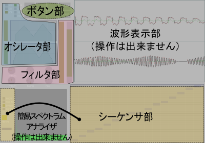
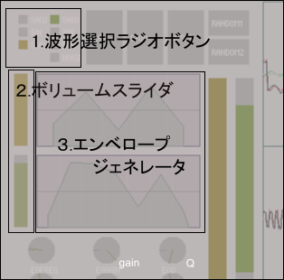
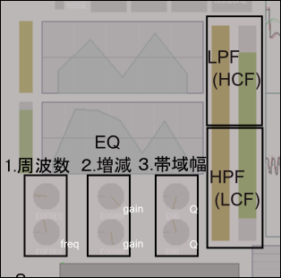
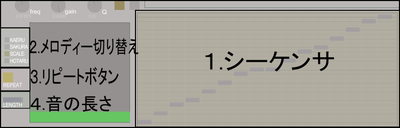

HowTo
phraserで学ぶ音とシンセシスの基礎
目次
phraserの基本操作
このセクションではメイン画面の操作方法について説明します。
まず音を出してみる
まず画面上部に並んだ大き目の四角の一番左、PLAYボタンを押してみましょう。「カエルのうた」が鳴りましたね。
では次にPLAYボタンの2つ右の上下に分かれたRANDOMボタンを２つとも押してみましょう。画面上でなにやら変化がおきたはずです。それではもう一度PLAYボタンを押してみましょう。先ほどと違うおかしな音で「カエルのうた」が聴こえましたね？これであなたはphraserを使って全く新しい音を作り出すことが出来ました！
・概要
phraserは２つの音を混ぜ合わせて(合成して)鳴らすことが出来ます。RANDOMボタンが２つあるのもそのためで、これから説明する機能やコントローラーも２つずつ用意されたものが多いです。ここからの説明では混ぜ合わせる前の音を、便宜的に「オシレータ１の音」・「オシレータ２の音」と呼ぶことにします。オシレータという言葉の意味は後ほど説明します。
ごく簡単に言うと、このソフトは
波形を選ぶ(×２)→音量を決める(×２)→フィルタにかける(×２)→シーケンサで作ったメロディーで再生する
という流れで動かします。それでは次の項から具体的な操作方法や画面の解説をしていきましょう。
画面構成
phraserの画面は大きく分けて、ボタン部・オシレータ部・フィルタ部・シーケンサ部に分けることが出来ます。
ボタン部
左からPLAY STOP RESET RANDOM1(上) RANDOM2(下)ボタンです。意味はほぼそのままです。
長く使っていて音がおかしくなったり急に小さくなったときはRESETボタンを押してみて下さい。
phraserはマシンパワーを必要としますので、他のソフトが同時に動いていると動作が遅くなる可能性があります。ボタンの上にマウスカーソルを乗せると色が変わりますが、変わらないときは処理が落ち着くまで少し待ってみてください。ブラウザは動くのにphraserの反応が無いときは、ページの更新(F5キー)を試してください。いつまでたっても、また処理が余計に遅くなりますので、ボタンはくれぐれも連打しないで下さい！
オシレータ部
波形選択用ラジオボタン、ボリュームスライダ、エンベロープジェネレータがあります。

１・波形選択用ラジオボタン
ボタン部の左にある小さな四角をクリックすると、出てくる音が変わります。上からのこぎり波、サイン波、矩形波です。オシレータ２ではホワイトノイズも選択できます。
のこぎり波、サイン波、矩形波
このテキストボックス内のデータをphraserページのテキストボックスに貼り付けてSENDボタンを押すと、それぞれの音が聴けます。（テキストボックスを右クリックして「すべてを選択」し、コピーしてください。）
注：サイン波は耳に聴こえづらいのですがエネルギーは他の音と同じなので、スピーカを痛めないようボリュームにはご注意ください。
このHowToではこれからもテキストボックスが出てきます。是非音を出して確かめながら読み進めていってください。
２・ボリュームスライダ
各オシレータの音の大きさを調節します。先ほどのデータを再生するとオシレータ２の音のボリュームが０になっていたはずです。先ほどの説明ではそれぞれの波の形をそのままの形でお見せするために、オシレータ１の音だけをシンプルに鳴らす設定でデータを用意しました。
まずはオシレータ１の音だけで色々な音が出せることを確かめて、それから２つの音の合成を試すのも良いかもしれません。もちろんはじめから２つの音を混ぜることも出来ますし、合成するバランスを変えることも出来ます。
３・エンベロープジェネレータ(略してEG)
１つ１つの音に音量の変化をつけることが出来ます。まず２つのデータを比べてみてください。EG部と波形表示部、流れる音に注意してください。
テキストボックスの中のデータを「すべて選択」し、phraserページ下部のテキストボックスに貼り付けてSENDボタン、です。
いかがでしょうか？つまりEG部で作ったグラフの通りに音量が変化する、というわけです。グラフ上でマウスをクリックすると形が変わります。ドラッグ・ドロップしても動きます。オシレータ１では５点、オシレータ２では７点の形を作ることが出来ます。
また、右クリックすると音量を０にすることが出来ます。これを利用すると
こんなことも出来ます。
フィルタ部
LPF・HPFのスライダー、１バンドのパラメトリックイコライザーがあります。

・LPF(LowPassFilter)＆HPF(HighPassFilter)
１本のスライダーを上から下から操作できます。マウスでドラッグすると色の付いた範囲を変えられます。この帯はフィルタを通過させる周波数帯域を指定します…が、フィルタそのものの詳しい説明は後ほどいたします。まずは音を出してみましょう。
いかがでしょう？１番目、フィルタをかけない音に比べると２番目のLPFをかけた音はこもったような音に聴こえませんか？３番目、HPFをかけた音はAMラジオか公衆電話の音のようにも聴こえます。とりあえず音量とも音の高さとも違う「何かしらの音の変化が起きた」という感覚でいて下さい。
・イコライザー(EQ)
１・周波数(FREQ)
２・増減(GAIN)
３・帯域幅(Q)
イコライザーという言葉は、オーディオ機器で聞いたことがあるかもしれません。ベースを上げたりミドルを下げたり、のアレです。
phraserではベースやミドルやトレブルという区分けではなく、周波数(Freq)と利き幅(Q, Bandとも)を指定して大きさ(gain)を上げ下げする「パラメトリックイコライザー」というものを装備しています。
これも、とりあえず音が変わるらしいという感覚でいて下さい。
シーケンサ部
最大１６個の音を並べてメロディーを作ります。加工した音はここで作ったメロディーで再生されます。

１・シーケンサ
青い四角が一つの音を表し、マウスクリック・ドラッグ＆ドロップで高さを変えられます。一番下と一番上と真ん中がド(C)の音で、半音単位で動かせます。また、右クリックで無音(休符)に出来ます。
横線の濃さが微妙に違いますが、薄い線上がピアノでいう黒鍵、濃い線上が白鍵の音です。なので濃い線の上に音を並べると「♪ドレミファソラシド」と鳴らせます。また、長さの違う音は作れません。
２・メロディー切り替え
シーケンサを使えば色々なメロディーが作れますが、作った音を手っ取り早く鳴らしたい方のために、上から「カエルのうた」「さくら」「ドレミファソラシド(ハ長調・Ｃメジャーの音階)」「蛍の光」のメロディーを用意しました。小さな四角をクリックするとシーケンサの音が並べ替えられます。
３・リピートボタン
クリックすると黄色くなり、シーケンサのメロディーを繰り返すようになります。音を止めるにはSTOPボタンをクリックして下さい。ここの情報はテキストボックスを使うデータに干渉しません。
４・音の長さ
スライドさせるとシーケンサ上の四角の長さがいっせいに変わります。これで音の長さが変えられます…が、特定の音だけ長さを変えることは出来ません。音楽用語で言うとスタッカートかテヌートで全ての音を（同じ音価で）鳴らすことになります。このデータもテキストボックスの内容に反映されません。
テキストボックスとSENDボタン
これまでの説明では、貼り付けたデータをphraserに読み込ませる用途で使ってきましたが、このテキストボックスには出力機能も付いています。PLAYボタンで再生を始めると、音・メロディーのデータがテキストボックスに出力されます。クリップボードにコピーして使ってください。
利用例：時間が無いときにメモ帳などに一時保存、知人にメールして自分の作ったデータを相手のブラウザで開いてもらう、掲示板に貼り付けて書き込みを見た人に聴いてもらう、友達とメッセンジャーなどを使ってデータのやり取りをする、など…